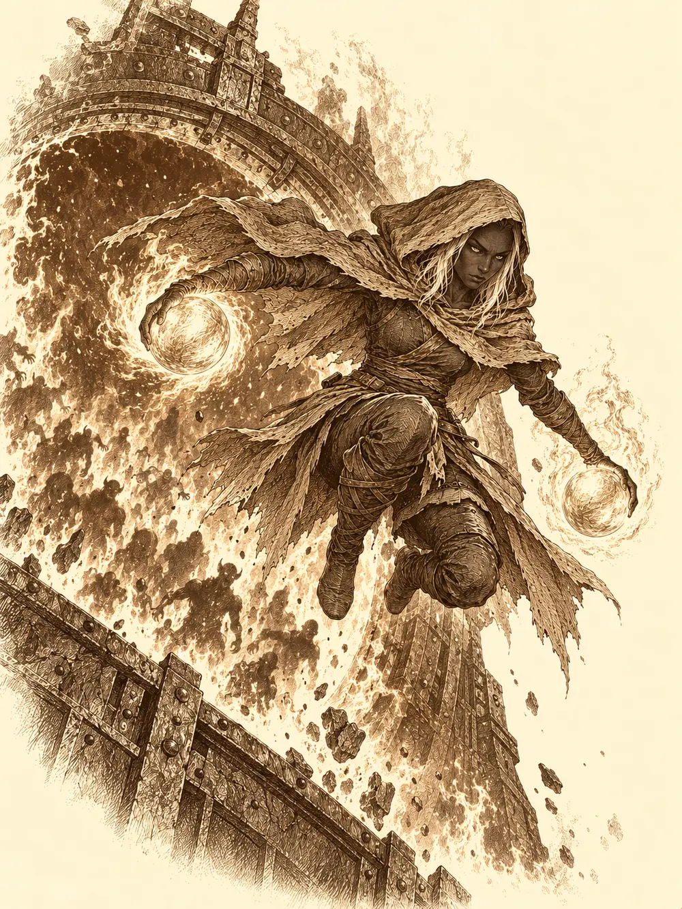

Capítulo 159
El portal
Libro IX · Mareas y muertos
Banzo cerró la puerta de la base con el pie y se dejó caer en un banco. Había pasado el día en los barrios bajos preguntando por Archi. Todas las respuestas lo habían llevado al taller del gnomo, una puerta rara que no se abría por mucho que llamara. Dentro se oía trabajar. Nadie salía.
R3 daba vueltas por la sala pitando sin parar. Jin y Serafina llevaban un buen rato aguantándolo.
"¿Podéis apagar ese cacharro? Me duele la cabeza".
"Lleva así toda la tarde", dijo Jin. "Solo pita".
El autómata se apartó a un rincón, pareció arreglarse algo por dentro y volvió. Se abrió y proyectó una imagen pequeña de Archi. Era el mismo mensaje que había visto Jin, más corto, sin las partes que no debían ver: unos pasos que seguir que no se entendían porque la grabación estaba cortada, unas disculpas, la petición de llevarlo a su taller y de que el mensaje llegara a Calista.
Alguien llamó a la puerta.
"¿Hay alguien en casa?".
"¡Hayate!".
El arquero alado volvía de su retiro, y de unos reconocimientos por el norte, donde también había cosas que hacer. Le preguntaron si había visto al gnomo. No. Banzo le contó lo que sabían. Decidieron ir los cuatro al taller con R3.
No llegaron a salir. El suelo tembló bajo sus pies y en algún lugar de la ciudad sonó una explosión enorme, un golpe sordo que hizo vibrar las ventanas.
"Eso no ha sido un temblor de Arwen", dijo alguien.
Desde la calle vieron una columna de humo sobre los barrios bajos y cosas que volaban por encima. Hayate desplegó las alas y subió para mirar. Los demonios salían de una casa y se dispersaban por las calles.
"Creo que se ha abierto algún portal".
Pararon al primer guardia que encontraron y le dijeron que diera la alarma, que no dejaran salir a ningún monstruo de los barrios bajos. La gente huía en dirección contraria a la suya. Cuando llegaron, los barrios bajos estaban invadidos, y en mitad de aquello luchaban Calista y Tiari, que habían bajado desde palacio y se habían puesto delante de los civiles.
"¡Prioridad a los civiles!".
Lucharon calle por calle. Una criatura con cabeza de mosca batió las alas y soltó un chillido que hizo temblar las paredes, y todos lo aguantaron. Hayate disparaba desde el aire, Gelbreak levantaba el ánimo de los demás con su voz y Calista controlaba lo que podía. En un momento algo la tumbó, sin sentido, y Gelbreak se arrodilló a su lado y la despertó. Unos demonios dejaron a medio grupo envenenado. Otros cayeron. Los arqueros de la guardia, los samuráis y los shinobi del shogunato fueron llegando y conteniendo otras calles. Todo apuntaba a la misma casa: Archivolt, el taller de Archi.
Tiari se quedó fuera ayudando. Antes de entrar, Calista les advirtió que el gnomo llevaba días metiéndose en problemas.
"Máxima precaución".
En el suelo del taller se arrastraba un hombre con la pierna destrozada, como si le hubiera pasado algo muy pesado por encima. Jin lo reconoció: era Víctor Frankenbolt, el compañero de Archi.
"¿Qué ha pasado?".
"Ese gnomo... no me dejaba ver lo que hacía abajo. Ha abierto un portal".
Jin le hizo un torniquete. Calista lo curó y lo estabilizó, aunque la pierna seguiría necesitando un médico. Nori, el sirviente invisible de la shogun, lo arrastró hasta un lugar seguro.
Bajaron al laboratorio. En el centro había una estructura de hierro gigantesca conectada por tubos a muchos recipientes, y en mitad de la estructura, un portal en funcionamiento. Echaba chispas y fuego. A través de él se veía el abismo. Era posible mirarlo de frente. De allí salían demonios sin parar.
Delante del portal, un gnomo pequeño se reía.
"¡Más demonios! ¡Vamos, vamos! Mon ami, mi shogun, ¿qué os parece mi invento maravilloso?".
"Dame una sola razón para no darte una patada y meterte en tu portal".
Archi sonrió.
"Vaya. Digamos que el gnomo me ha ayudado un poquito".
Calista abrió mucho los ojos. "Tú no eres Archi. ¿Quién eres, maldito engendro?".
"Nadie. Un amigo".
Hayate subió aleteando para ver mejor cómo se alimentaba aquello. Los tanques que lo rodeaban le daban energía, pero no eran la fuente: podían reventarlos y el portal seguiría abierto. La fuente estaba incrustada en la estructura. Eran dos esferas redondas, una de fuego y otra de rayo.
Las esferas de Danifae.
Hayate disparó una flecha hacia el engarce, y la flecha se deshizo en el aire antes de tocarlo, desintegrada por el aura eléctrica.
Jin dijo que quizá él pudiera tocar la de fuego. Nunca lo habían probado. Banzo no quería que nadie se muriera probando cosas. Él no pensaba moverse de allí.
"Hay una persona que puede manejar las esferas. Id a por ella".
Calista lo miró con la cara de quien oye lo último que quería oír. Tenía razón. Danifae era la única que conocían capaz de tocar las dos.
"Esta es la última vez que sale de esa celda. Y tú más te vale no morirte antes de que vuelva". Se volvió hacia los demás. "Si tengo que pactar con mi peor enemiga para salvar Kuroto, lo haré".
Se fue corriendo con Gelbreak.
Banzo, Jin, Serafina y Hayate se quedaron solos delante de un portal que no paraba de escupir demonios. Banzo les dijo que aquello no era un combate como los demás. No había que acabar con el enemigo, porque el enemigo no se acababa. Había que aguantar.
En la cárcel del shogunato, Danifae colgaba de los brazos y de las piernas, abierta en aspa, con la cabeza caída y una mordaza en la boca. Levantó la cabeza al ver entrar a Calista y le brillaron los ojos.
"No puedo creer que vaya a hacer esto por Kuroto", murmuró la shogun.
Gelbreak tenía el estoque en la mano. Calista, con un conjuro preparado, le arrancó la mordaza.
"Solo te voy a soltar por una razón: para que saques esas malditas esferas. Después no te vas a resistir y vas a volver aquí. Si no, te perseguiré yo misma hasta el fin del mundo".
"Entendido. Entonces soy libre por el momento".
Danifae se quitó las cadenas ella sola, delante de ellos, como quien se quita unos guantes. Calista dio un paso atrás. La drow se sentó en el suelo, se soltó los grilletes de los tobillos con las uñas y preguntó si iba a ir desnuda. Le dieron una espada corta, y Calista no se la entregó hasta que estuvieron cerca de los barrios bajos.
Abajo, la oleada era interminable. Había demonios con cuerpo de serpiente y seis brazos armados, demonios enormes, criaturas menores que se colaban por todas partes. Hayate pronunció una palabra sagrada y devolvió a varios a su plano, y otros entraron por el portal a ocupar su sitio. Jin aguantaba golpes y agarres, filos que le buscaban el cuello. Banzo curaba a quien caía y abría posiciones con el cuerpo. Serafina peleaba de cerca, puño contra garra.
Entonces el falso Archi levantó las manos y llenó el aire de unas luces que se movían, y los cuatro se quedaron mirándolas, embobados, sin poder apartar los ojos.
Así los encontraron Calista, Gelbreak y Danifae. Los despertaron con pequeños golpes. Gelbreak aturdió a buena parte de los demonios con una sola palabra. Hayate curó a Jin. Calista levantó el estoque de la perla y les dio la orden de golpear todos a la vez, y se protegió con su propia defensa. Banzo escupió aguardiente en llamas y llamó a sus espíritus, que salieron de la tierra y empujaron a los demonios. Entre todos abrieron un camino hasta el portal.
Por ese camino corrió Danifae. Una araña se cruzó en su carrera y, de ella, surgió por un instante una figura drow que le puso en la mano un látigo y se deshizo en el aire. Danifae lo desenrolló de un chasquido y trepó por la estructura del portal.
Intentaron desterrar al falso Archi de aquel plano, y la entidad resistió. Luego se ocultó. Calista, transformada en dragón, y Banzo, con su clarividencia, lo encontraron.

Arriba, Danifae desenganchó las dos esferas. Las tomó una en cada mano y saltó al suelo.
El portal se apagó. El abismo desapareció de su interior, y los demonios que estaban a punto de cruzar no cruzaron.
El falso Archi los miró a todos. Luego desapareció, sin más, llevándose el cuerpo del gnomo a otra parte. La conciencia del verdadero Archi seguía encerrada en el cristal rojo.
Hayate le metió prisa a Danifae y la drow ni se molestó en contestarle. Ella respondía ante quien la había sacado, no ante cualquier cazador.
Jin se acercó a la esfera de fuego y la tocó con un dedo.
El fuego le subió por la mano y le arrancó un grito. Ni siquiera su resistencia al calor bastaba.
"¿Qué secreto tienes tú para poder tocarlas?", le preguntó a Danifae.
Ella le devolvió la pregunta: qué secreto tenía él para hacer lo que hacía con su espada. Jin le dijo que entrenamiento, mucho entrenamiento.
"Entrenamiento", repitió Danifae, y le sonrió.
Banzo recorrió la fábrica con su sensor buscando a Archi y no lo encontró por ninguna parte. R3 tampoco sabía dónde estaba. Serafina intentó razonar con la drow, y Danifae le dio a entender que aquella celda nunca la había retenido de verdad. Luego se acercó a Calista y le mostró las esferas.
La shogun intentó doblegar su voluntad. Le habló con palabras que debilitaban, lo intentó una y otra vez. Danifae resistió, le devolvió una orden que la hizo apartarse y se quedó delante de ella.
"¿Por qué intentas controlarme?".
"Eres una reclusa. No mereces otro trato".
"Bien". Dejó las esferas en el suelo.
Calista se agachó y no pudo tocarlas. Nadie podía. Danifae las recogió.
"Vamos a hacer un trato. Yo llevo las esferas y vosotros me metéis en la cárcel, si queréis. Ese demonio que se ha escapado podría hacer muchas cosas".
Calista aceptó, apretando los dientes. Ya pensaría en palacio cómo asegurarlo todo. Le pidió las armas. Danifae le entregó la espada corta por la empuñadura, y luego el látigo. Cuando Calista lo tomó, el látigo se movió. Tenía tres cabezas de serpiente vivas, y una de ellas le mordió la mano. Calista neutralizó el arma y encadenó las manos de la drow, que siguieron sosteniendo las dos esferas.
Echaron a andar hacia palacio. Danifae caminaba junto a Gelbreak.
"¿Qué pasa, hermanito? Estos cazadores están muy bordes últimamente. ¿Te he hecho algo?".
Los demás salieron a la superficie a ver si los demonios habían sido sofocados, a curarse las heridas y a organizar la búsqueda de Archi.
Volviendo a Sho, Jin notó que le ardía la mano con la que había tocado la esfera. Los dedos y la palma se le envolvieron en llamas. No le dolía. El calor era agradable, como el de una manta. Para los demás, en cambio, el aire se volvió sofocante. Antes de que pudiera entenderlo, su cuerpo absorbió las llamas, y unas líneas encendidas le subieron por las venas del brazo hacia el corazón.
Se llevó la mano al pecho. Hayate intentó leer aquella energía y le pidió que mantuviera el control, pero solo vieron las líneas rojas avanzar hasta apagarse. Serafina se secó el sudor de la frente. Recordó algo que había oído sobre las esferas y sobre quién era la mujer encerrada en la cárcel, y no dijo nada.
En la prisión, Calista y Gelbreak llevaban a Danifae encadenada por los pasillos mientras ella sostenía sin daño el fuego y el rayo. La drow habló de un demonio mayor que habría poseído a Archi y se ofreció a expulsarlo. Hablaron de engaños, y Calista admitió que había ocultado quién la apuñaló porque no quería que los cazadores supieran que le había robado una esfera a Danifae. La drow volvió a ofrecer su ayuda contra ese demonio y los cultistas a cambio de su libertad, aunque fuera con Banzo vigilándola día y noche. Calista se negó.
Pidió unos contenedores para las esferas. Una ráfaga de viento de la shogun no consiguió moverlas, y Danifae las empujó ella misma dentro. Le pusieron protecciones de metal que le inmovilizaban manos y pies, y otras esposas encima. Calista pensaba en mantenerla dormida para que no pudiera conjurar, cuando Danifae le dijo algo a Gelbreak en privado que lo dejó pálido. Fuera de la celda, él le explicó a Calista que la criatura de Lolth que habían visto en un combate anterior era Yiccardaria, a quien identificaba como la favorita de Lolth, y que temía que ninguna cadena sirviera contra ella. Calista se guardó la llave de una mordaza nueva y marcó símbolos mágicos en el suelo y bajo el cierre. Salieron discutiendo qué querría la Reina Araña y cómo iban a atender tantos peligros a la vez. Acabaron abrazados en el pasillo.
Arwen oyó un estruendo de cristales rotos y entró en la habitación de Kazuki. Estaba ordenada, llena de cosas feéricas, y sobre la mesa había un libro que reconoció: el de la tumba del bosque. Lo cogió con las manos manchadas de bayas y salió corriendo a abrazar a Banzo, que volvía con R3 de otro día buscando a Archi sin éxito. Los dos creyeron que era un cuento. El goliat, que leía con dificultad, leyó el título como La Mancha de la Suerte, que no era lo que ponía. R3 pitó al ver el libro, y Banzo creyó que insistía en lo de Archi y lo mandó de vuelta a Sho.
El libro tenía muchas letras y un solo dibujo, una marca. Arwen sacó al kodama enfermo, que llevaba el mismo signo, y dejó de tratarlo como un juego. Kazuki apareció, cansado. Les explicó que aquel libro hablaba de la muerte y de la antigua familia Ball, y que lo habían encontrado en el bosque, entre no muertos. Les pidió que lo investigaran mientras él volvía a su plano por otro asunto. Channi entró gritando que había salvado a Archi. Arwen aceptó investigar y llamó a Chilia con su cuervo.
Chilia salió del cuervo y cogió el libro. Se aburrió con las páginas sin ilustraciones, pero reconoció la marca: la tenía en el vientre, y se la enseñó. No recordaba de dónde le venía. Lo de Channi se deshizo enseguida: había encontrado una prenda con una etiqueta que decía Archipiélago. A Archi no lo había encontrado.
Arwen le pidió a Chilia que leyera, y Chilia leyó despacio. Los Ball eran una familia élfica con la Marca de la Muerte, capaz de influir en la vida y en la muerte. Según el libro, las otras casas y los dragones de Argonnessen intentaron exterminarlos cuando descubrieron que hacían rituales para crear criaturas mitad dragón con esa marca. Sus seguidores reunieron después los restos de Ilmarrow y la reanimaron, sin saber que la marca solo funcionaba en un portador vivo. Chilia situó todo aquello en Everon y leyó nombres de lugares que nadie conocía.
Arwen y Channi la miraron con miedo. ¿Estaba enferma? ¿Poseída? Chilia dijo que estaba como siempre y, para demostrar que estaba fuerte, derribó de un puñetazo otra pared de la base. Channi comparó lo que sentía con lo que le había pasado a Kurobane, y Chilia entendió que tenía a alguien encerrado dentro. Se asustó. Pidió que se lo sacaran y sacudió a la pequeña en el aire. Arwen intentó borrarle la marca con su magia, y solo le hizo cosquillas.
En la Flor de Loto, anclada cerca de Sho, Serafina llevaba una semana instruyendo a nuevos marineros de Kuroto. Gritaba mucho y explicaba más, y le daba una cerveza a quien hiciera bien los nudos. El capitán Spock no estaba tranquilo con una tripulación entera de aprendices. Ella defendía que al mar se aprendía en el mar, y el capitán, que obedecía al shogunato, dio la orden. El barco zarpó hacia el mar de Kyushu.
Durante la travesía, Serafina enseñó al joven Pic a atar los cabos con maña, porque fuerza no tenía, y el chico lo repitió y le salió. Junto al timón, Spock le recordó que el viaje hasta Puerto de las Espadas era largo. La contramaestre le dio una palmada en la espalda y se quedó mirando el agua, con el viento en la cara.